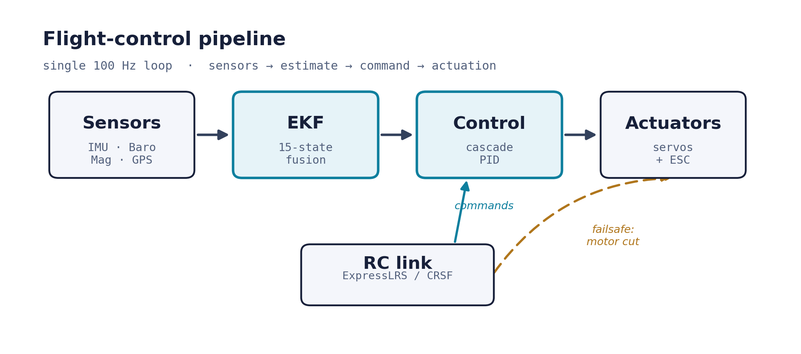
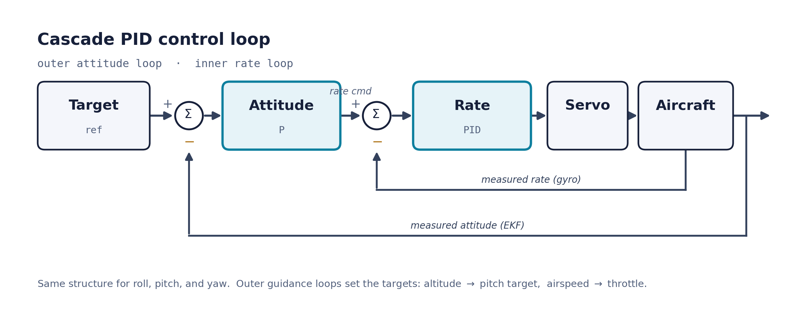

Overview
The goal was simple to state and hard to earn: take an ordinary foam RC plane and make it fly itself — without reaching for an off-the-shelf flight controller like a Pixhawk. Every layer, from the state estimator to the servo mixing, is code I wrote and reasoned about.
The project has two halves that share the same math. A MATLAB 6-DOF simulation models the aircraft as a rigid body and runs the estimator, controllers, and guidance in the loop — the place to design and de-risk before anything leaves the ground. Then C++ firmware on a Teensy 4.1 runs that same estimator and those same control laws at 100 Hz against real sensors, servos, and a live radio link.
System architecture
A single 100 Hz pipeline: raw sensors are fused into one state estimate, which the cascade controllers turn into surface and throttle commands. The RC link rides on top as command input and a hardware safety tether.

State estimation — the EKF
A 15-state Extended Kalman Filter fuses a 9-DOF IMU, barometer, magnetometer, and GPS into a complete navigation solution — and, just as importantly, holds together when the flight gets rough.
Fifteen states
NED position and velocity, Euler attitude, and live gyro & accelerometer bias estimates — so drift is observed and removed, not trusted.
Multi-rate sensors
Gyro/accel drive the prediction; baro, magnetometer, and GPS correct it at their own rates, each with its own measurement model and gating.
It cannot die
Joseph-form covariance updates keep the filter positive-definite, a guard tames the Euler pitch singularity, and a divergence check scrubs any NaN so a transient can't brick the estimator mid-air.
That last card is the story of the project in miniature: a textbook EKF that worked on the desk diverged to NaN the first time the airframe was shaken hard. Root-causing it — a covariance drifting non-positive-definite, compounded by gimbal lock — and hardening the filter against it was the difference between a demo and something I'd trust over a field.
Control system
A cascaded PID architecture: an outer attitude loop sets the target for an inner angular-rate loop that drives the surfaces. Altitude commands pitch; airspeed plus a climb feedforward commands throttle.

Manual
Direct radio passthrough with correct surface mixing and per-servo trim.
Hold / Loiter
Captures the current altitude and airspeed and orbits a GPS-anchored circle autonomously.
Guidance
Bank-to-turn navigation — circular loiter and return-to-launch, validated in simulation.
- Arming interlock — the motor is disarmed at power-up and only lives behind a deliberate switch sequence.
- Link failsafe — loss of the radio for half a second cuts the throttle and safes the surfaces.
- Ground gating — integrators are frozen and the throttle idled until the aircraft is actually flying.
Simulation-first design
Nothing was tuned by crashing hardware. The full stack first ran in a MATLAB 6-DOF simulation — a rigid-body aircraft model, a trim solver for the cruise operating point, and the same EKF, controllers, and guidance flying a virtual airframe.
The sim tuned the gains, exercised the loiter and return-to-launch guidance, and answered the questions you don't want to discover in the air. One example: across the entire flight envelope the control surfaces needed only about 5° of the 25° available — confirming enormous control-authority margin before the first hand-launch.
Hardware
A deliberately minimal, hand-assembled avionics stack — every wire, joint, and calibration done and understood by hand.
Calibration & flight test
Resolved the IMU frame from first principles, calibrated the magnetometer, verified every control-surface direction and the failsafe on the bench — then flew it.

The aircraft has flown under manual control, responding correctly to every input — validating the airframe, CG, and control directions in the air. The autopilot modes are being brought online on a conservative progression: manual, then hold at altitude, then fully autonomous.
What broke, and what I learned
- An intermittent IMU traced not to my wiring — which ohmed out clean — but to a cracked factory solder joint under the chip, found by watching it drop off the bus when pressed.
- The estimator that diverged — the EKF NaN'd on hard motion and never recovered, until Joseph-form math, a singularity guard, and a divergence recovery made it self-heal.
- Fail-safe by construction — a dead barometer once fed a NaN straight into the filter; now every sensor is optional and every reading validated, so a missing sensor degrades the system instead of crashing it.
Where it goes next
- A custom PCB to replace the hand-wired avionics and place the magnetometer clear of the motor and battery.
- TECS total-energy control coupling pitch and throttle.
- Waypoint navigation, onboard telemetry logging, and the maiden autonomous flight.